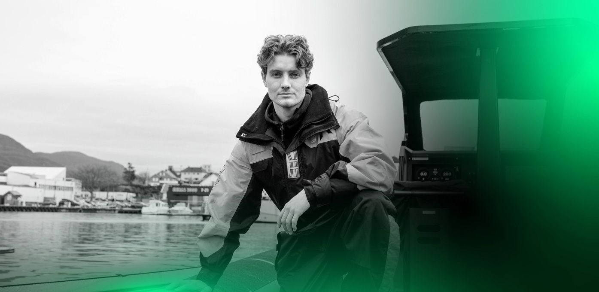
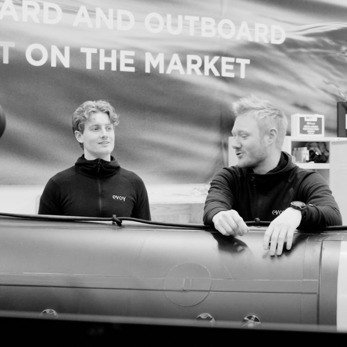
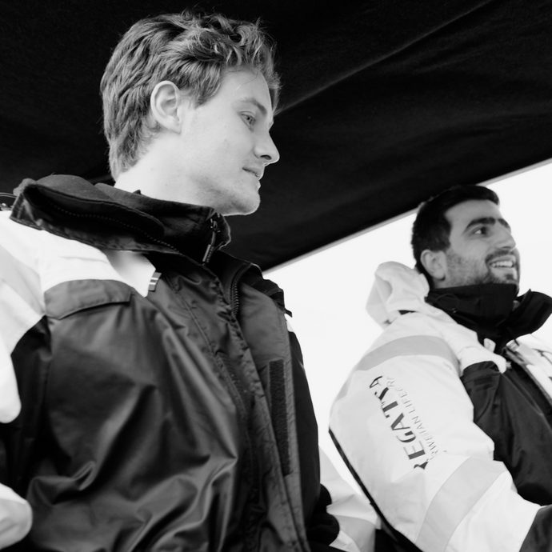

Harald Bryn
Cybernetics engineer
Work Experience
Electrical and Automation Engineer Trainee, Evoy
Duration: 1 Year
- Participated in the creation of electrical drawings using E3.
- Performed service, system setup, and creation of test benches.
- Conducted service trips for system installation, troubleshooting, and customer interactions.
Key Achievements
- Measured different systems and outputs running on canbus, utilizing software and DBC files for real-time data reading and plotting.
- Programmed the main system according to customer requirements.
- Developed software for automating various internal processes.
- Engaged in learning about the new system running on micro service architecture.
Current Learning
- Preparing to write automation code for the new system running on micro service architecture.


